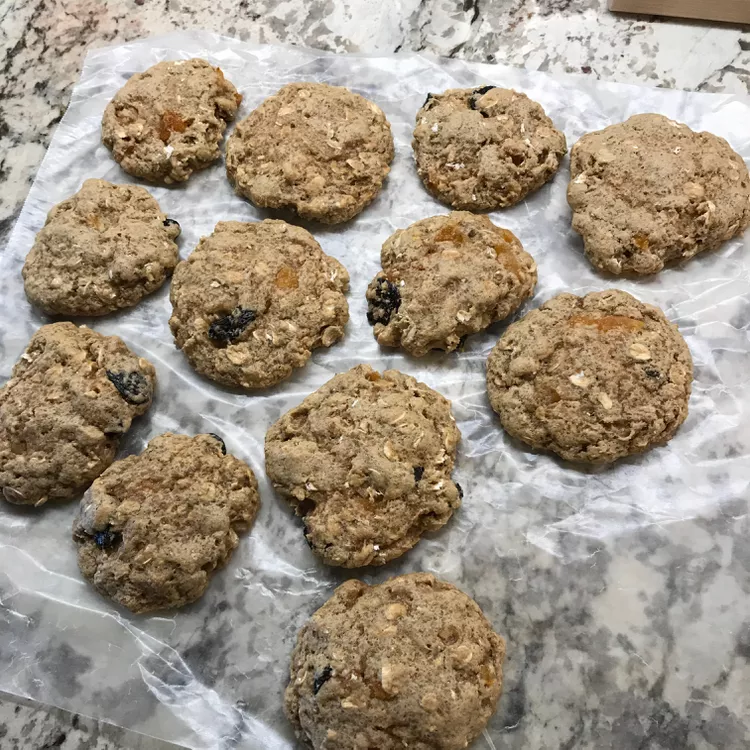

Cookies de Banana com Castanhas

Receita simples e saudável
Receita super rápida e saudável de cookies caseiros de banana com castanhas
ingredients
- 2 bananas maduras
- nozes em pedaços
- 200g de farinha de aveia
- canela a gosto
Modo de Preparo
- amasse as bananas até formar uma pasta
- misture a aveia com as bananas amassadas e mexa bem
- adione um pouco de nozes na massa e a canela e misture
- faça bolinhas com a massa e coloque em um papel manteiga
- cubra as bolinhas com nozes para decorar e leve ao forno por 15 minutos